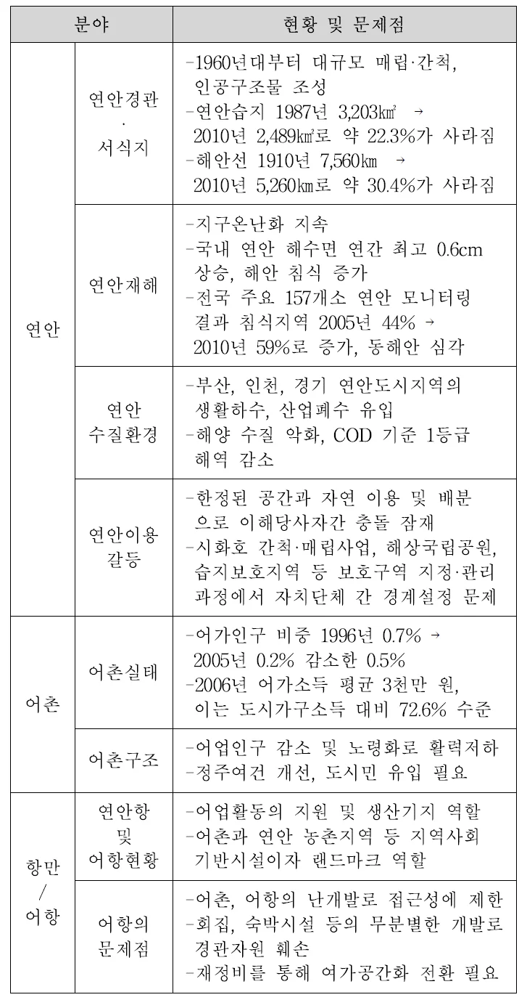
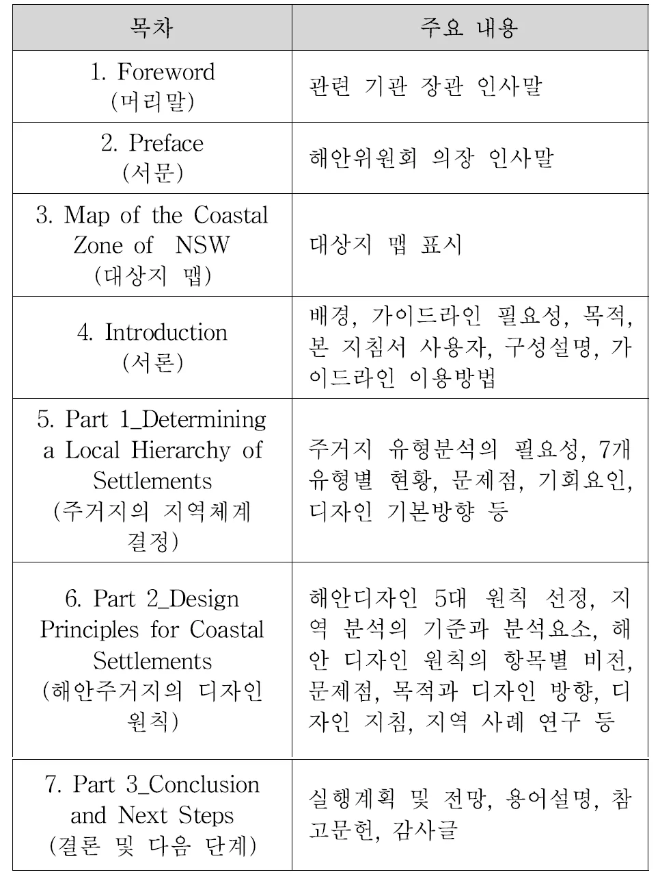
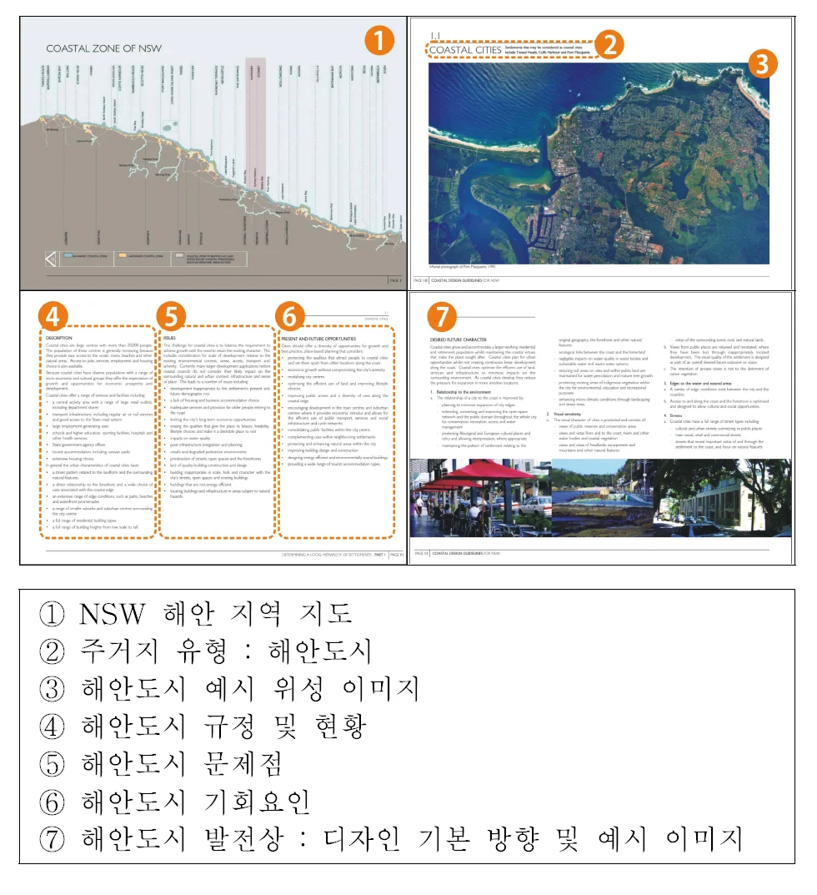
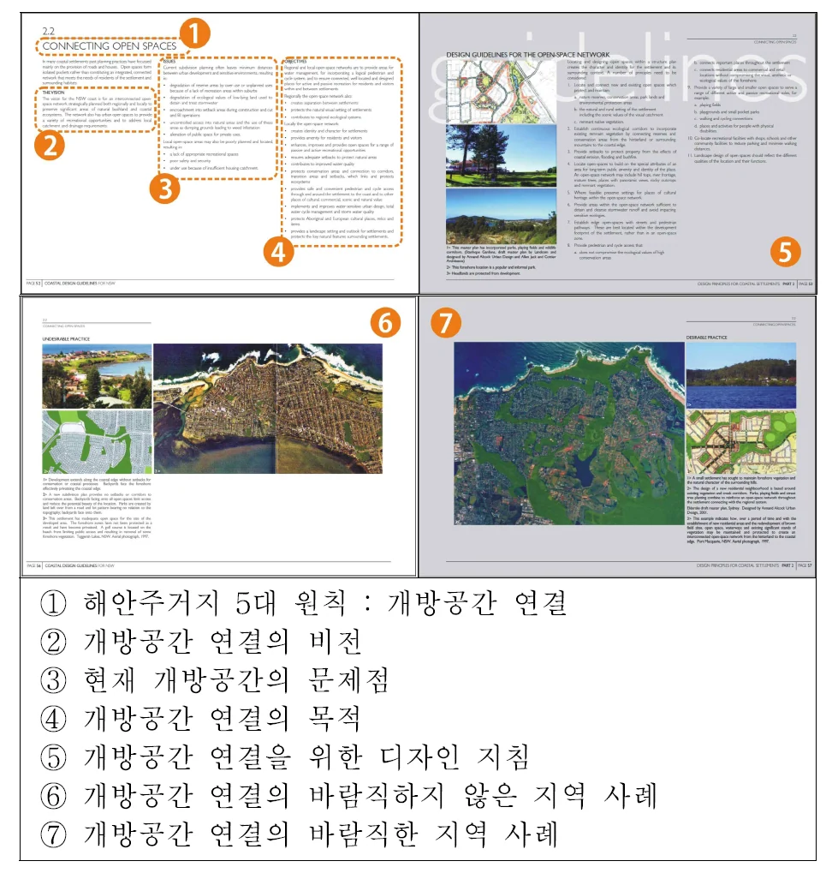

바다는 무엇을 따라야 하는가 — 해양공간 원고
바다는 무엇을 따라야 하는가?
Maritime space follows something?
산업화 시대의 육역공간이 가지는 여러 가지 한계와 문화적, 환경적 가치로서 워터프론트 등 수변 공간 재생개발 등을 통해 해양 공간은 지역 경제발전의 중점 대상이 되었습니다. 그로인해 천연자원을 활용한 수산업이나 무역, 교통 거점으로서의 전통적 해양산업은 점차 레저, 스포츠, 비즈니스와 그 외의 문화 활동에 관련된 관광 영역으로 확장되었습니다. 관광 대상이 해수욕장에서 마리나, 어촌, 항만, 어항, 쇼핑 및 문화시설 등으로 다양화된 것은 공간 활용에 대한 시간적 제약이 완화됨과 동시에 사계절 내내 많은 대중이 모이게 되었음을 의미합니다.
이처럼 해안 공간이 삶의 질 향상을 위한 문화적·공공적 대상으로서 많은 부가가치를 창출하고 있으나 그 이면에 고밀도 개발로 인한 자연성 훼손과 경관 저하, 사용자 간의 공간 이용에 대한 충돌이라는 문제점이 발생하였습니다. 이를 해결하기 위하여 세계 각국에서는 정책적으로 해양 공간관리를 위한 제도 및 관리방안을 수립, 시행하고 있는데 해안 디자인 가이드라인도 그 일환으로 개발된 이용 지침이라 할 수 있습니다. 이미 내륙에서 도시별 디자인 가이드라인 개발을 통하여 조화로운 경관 형성을 위해 노력하고 있으나 해안의 경우, 풍토적·경관적·사회적 특수성 때문에 이를 고려한 가이드라인이 별도로 개발될 필요가 있습니다.
사전적 정의로서 가이드라인이란 정부가 어떤 부문에 대한 정책을 뒷받침하기 위하여 설정한 규제의 범위 또는 지침을 의미합니다. 디자인 가이드라인(Design Guidelines)은 지방 정부에 의해 작성되는 문서로서 설계 이슈에 대한 부가적 정보와 지침을 담은 안내서이며 설계 목적을 어떻게 달성할 것인가를 상세하게 서술한 것이자 구체적인 디자인을 유도할 수 있는 가장 상세한 디자인 정책 수단 등으로 정의되고 있습니다.
특히 이것은 문제 발생에 대한 사후적 대응이기 보다 선행적 조치이자 유지 수단으로서 적은 비용으로도 대상물을 효과적으로 관리할 수 있다는 장점을 지닙니다.
<그림 1> 국내 해안 공간의 현황 및 문제점 < IMAGE :해안 디자인 가이드라인의 구성요소 및 특성 분석, 한국디자인문화학회>

2008년 이후 국내 다수의 지자체에서는 도시 미관 정비 및 정체성 강화를 목적으로 공공디자인 가이드라인을 개발하여 도시 공간이나 시설물 등의 형태와 행위에 대한 권장 및 규제사항을 제시하고 있습니다. 그러나 다수가 디자인의 원칙적 측면에만 집중하여 해당 지역의 물리적, 자연적, 사회적 특성 등을 제대로 반영하지 못하는 한계를 드러내고 있습니다. 도시별 디자인가이드라인의 이러한 문제점은 해안에 적용될 경우 해양 환경의 특수성에 부합하지 못함으로서 더욱 부각됩니다.
<그림1>의 표에서 보는 바와 같이 해안 지역은 토지 개발 사업 등으로 인하여 연안 침식과 경관 단절, 수질 오염과 같은 자연성 손실의 문제를 겪고 있습니다. 또한 한정된 해양 공간의 이용권에 대한 국제적·지역적 분쟁도 지속되고 있습니다. 반면 낙후된 어촌의 정주여건을 개선하고 유휴 항만의 활력을 찾으며 방문객들의 안전한 활동을 위해서는 개발 작업 또한 필요합니다. 따라서 해안 공간 개발 시 해양 생태계 및 주변 경관과의 조화, 염분과 습도 및 해안선 변화에 대한 장기적 대비, 공간 이용에 대한 기존 거주민과 방문객 등 이해관계자간의 충돌 방지는 해안 환경 보호를 위한 필수적 고려 사항입니다. 또한 해안에서만 경험할 수 있는 다양한 프로그램과 접근성, 안전성의 확보는 해안 공간을 활성화하는 기반이 될 것입니다.
해안 또는 연안 공간은 육지와 해양이 만나는 접촉부로서 인류에게 제공되는 생태계 서비스 중 43%를 생산하고 있습니다. 또한 전 세계 인구의 60% 이상이 거주하며 육상 이용행위와 해역 이용행위가 동시에 이루어지는 사회적 공간이기도 합니다. 생활수준이 향상될수록 해안 공간에 대한 개발 수요는 증가하고 있으며 이는 물이라는 자
연요소가 갖는 친수성과 쾌적성뿐 아니라 경관에서 오는 개방감, 비일상적 행위의 수용, 역사적 가치로 인한 매력 때문일 것입니다. 그러나 생태 보고로서의 가치와 사회문화적 활동공간으로서의 가치 추구는 보전과 개발이라는 활용 방향에 따라 균형을 이루기 어렵습니다. 국내 해안 공간의 현황과 문제점 분석을 통하여 이를 확인할 수 있습니다.
우리나라는 지리적으로 해양과 밀접한 생활권을 갖고 있으며 주5일제 시행 등으로 인해 해안을 찾는 인구도 급증하고 있습니다. 그러나 해안 환경의 보호와 방문객의 안전한 활동을 위한 해안 디자인 가이드라인 개발은 미흡한 실정은 사실입니다. 따라서 이제는 국외 해안 디자인 가이드라인을 분석하여 해안 맞춤형 가이드라인에서 다루어야 할 요소와 디자인 기본 방향 및 시사점을 도출하고 분속하여 우리에게 맞는 가이드라인에 관한 연구가 필요하다 사료됩니다. 또한 이런 개발을 통해 해안에 도시 디자인 가이드라인을 적용하는 것에 대한 한계를 인식 하게 하고 향후 개발될 수 있는 국내 해안 디자인 가이드라인의 방향성을 제시하는 가치가 있을 것이라 생각합니다.
본 기고에서는 필자가 연구한 ‘해안 디자인 가이드라인의 구성요소 및 특성 분석’이라는 논문 내용을 기반으로 국외 3개 해안에 대한 디자인 가이드라인의 원문 또는 번역본을 분석한 내용을 기반으로 하고 있습니다. 해안 가이드라인의 범주를 설정하기 위해 영문 제목에서 ‘Coastal’, ‘Shoreline’, ‘Bay’ 등의 단어를 포함하는 디자인 가이드라인을 대상으로 하였으며 이전 기고를 통해 미국 샌프란시스코 시의 항만부서가 공개한 샌프란시스코 만의 블루 그린웨이 디자인 가이드라인(Blue Greenway Planning and Design Guidelines)을 간단히 소개하였으며 또한 이보다 앞서 개발된 연안공간으로의 공공접근을 위한 디자인 가이드라인(Shoreline Spaces Public Access Design Guidelines for the San Francisco Bay)을 함께 분석하였습니다. 후자는 전자와 비교하였을 때 접근성 향상이라는 특정 목적을 가지고 시설물 및 공간에 대한 다소 보편적인 디자인 지침을 제시하고 있습니다.
본 글을 통해 해안 디자인 가이드라인에 대하여 구성 체계와 가이드라인 전개 방향, 지침 대상과 내용에 대해 살펴보고 있으며 미약하나마 이해를 돕기 위해 해당 페이지의 이미지를 삽입하고 구성에 대한 내용을 표시 하였습니다. 각 가이드라인의 질적 우위를 판단하기보다 국내 해안 디자인 가이드라인 개발 시 고려해야 할 기본 사항들을 도출하는데 의의를 두고 있습니다.
해안 디자인 가이드라인은 이러한 고려사항을 포함하여 거시적 차원에서는 해안 도시의 구조 및 축의 설정, 워터 프론트의 단계적 개발과 접근성 강화에 대한 계획을 제시할 수 있을 것이며 동시에 특정 시설물, 구조물 등의 형태와 재질, 색채의 범위를 설정하고 내용적으로 공간 이용 프로그램을 제시할 수 있을 것입니다.
호주 뉴사우스웨일스 해안 디자인 가이드라인은 해당 지역의 해안위원회(Coastal Council of NSW)에 의해 2003년 발행되었습니다. 본래 1997년 뉴사우스웨일스 정부의 해안정책 자료로 준비되었으며 2001년 6월 비준되어 2002년 발효되었습니다.
뉴사우스웨일스 해안 디자인 가이드라인 개발의 배경을 살펴보면 이 곳을 방문하는 관광객의 급증으로 인한 기존 주거지의 정체성 및 생활필수 기반 특성 상실과 서비스 인프라 제공에 대한 압력의 문제가 생기게 되었습니다. 즉 관광 활성화를 위한 개발 과정에서 지역의 독특한 문화적·자연적 특성은 사라지고 해안 고유의 정주형태가 변형되는 것이 문제를 야기한 것입니다. 따라서 뉴사우스웨일스 해안 디자인 가이드라인은 첫째, 해안을 따라 형성된 정주형태와 자연환경의 다양성 보호, 둘째, 일률적인 도시 개발 방지, 셋째 이러한 기본 목표 하에 해안의 어메니티와 활성화를 높일 수 있는 지침을 통해 상기 기술된 문제점들을 해결하고자 구성되었습니다.
<그림 2> 호주 뉴사우스웨일스 해안 디자인 가이드라인의 구성 및 주요 내용 < IMAGE :해안 디자인 가이드라인의 구성요소 및 특성 분석, 한국디자인문화학회>

뉴사우스웨일스 해안 디자인 가이드라인에서 해안 주거지의 유형 구분은 주요한 분석 대상으로 다루어집니다. 주거지 유형마다 규모, 서비스, 기반시설과 성장잠재력, 자연적 특성이 다르기 때문에 이에 대한 디자인 또한 구분되어야하는 이유 때문입니다. 본 해안 디자인가이드라인에서 해안주거지는 다음의 7가지 유형으로 구분되고 있다.
1. 해안도시
2. 해안 소도시
3. 해안 마을
4. 해안 촌락
5. 내륙 해안중심지; 도시, 소도시, 마을
6. 새로운 해안 주거지; 마을과 촌락
7. 고립된 해안주거지
구분의 기준은 인구, 서비스와 편의시설 보유 상황, 거리패턴과 빌딩 등의 도시적 요소, 해안 및 산지와의 거리 같은 자연적 요소입니다. 예를 들어 해안 도시의 경우, 2만 이상의 인구를 가지며 백화점을 포함한 대규모 소·도매 아울렛, 항공과 철도의 교통 인프라, 대규모 고용을 창출하는 기관을 보유하고 해안 전면부 및 주변부와 동시에 관계된 주거지로 규정됩니다. 각 주거지 유형별로 무분별한 개발 또는 개발 소외로 인한 문제점이 분석되며, 이를 해결하기 위해 기회요인 및 발전상이 제시됩니다.
<그림 2> 호주 뉴사우스웨일스 해안 디자인 가이드라인의 5장 지역위계 구성 < IMAGE :해안 디자인 가이드라인의 구성요소 및 특성 분석, 한국디자인문화학회>

발전상은 환경과의 관계, 시각적 민감도, 도로, 빌딩 등에 대한 디자인 기본방향을 포함하고 있습니다. 종합해 보았을 때 5장 주거지의 지역체계 결정 파트에서는 해안 주거유형별 수용 가능한 프로그램과 시설, 제한해야 하는 개발 방향을 거시적으로 다루고 있습니다.
<그림 3> 호주 뉴사우스웨일스 해안 디자인 가이드라인 6장 해안주거지 디자인원칙 < IMAGE :해안 디자인 가이드라인의 구성요소 및 특성 분석, 한국디자인문화학회>

6장은 매우 중요한 내용을 다루고 있습니다. 본 가이드라인의 출발이 관광객 증가에 따른 지역 주거환경의 문제를 해결하고자 함에 있다 하였는데 이를 위해 해안주거지의 디자인 원칙을 다루는 부분이기 때문입니다. 본 파트에서는 공공영역의 요소들에 대한 5대 원칙을 설정하여 각각의 주제에 해당하는 디자인 지침을 제시하고 있습니다. 또한 이를 일차적으로 제시했던 7개 주거지별 디자인 기본 방향과 연계하여 각 요소들이 해당 주거지에서 어떠한 방향으로 디자인되어야 하는지 간략히 지침을 보여주고 있습니다. 해안주거지의 5대 디자인 원칙은 다음과 같습니다.
1. 주거지의 부지와 경계 정의
2. 개방공간 연결
3. 자연지역의 가장자리 보호
4. 도로패턴의 보강
5. 해안여건에 적절한 빌딩
상세한 내용을 살펴보면 개방 공간 연결에 대한 항목의 경우, 우선적으로 현재 토지구획계획으로 인한 보존지역 훼손, 레크리에이션 공간 및 세트백 부족 등과 같은 문제점을 지적하고 있으며 개방 공공공간 네트워크는 거주자와 방문객을 위한 어메니티를 제공하고 능동적 레크레이션 공간을 제공하며 경관 및 자연보호를 위한 중요한 요소로 규정되어 있습니다. 이를 구축하기 위한 디자인 지침으로 공원, 놀이터, 야생동물통로를 통합한 마스터플랜 수립, 해안 침식, 홍수 등으로부터 재산보호를 위한 세트백 설정, 해안 돌출부의 개발 제한 등이 제시되고 있습니다.
디자인 지침과 동시에 각각의 주제에 대한 바람직한 실행안과 바람직하지 않은 실행 사례를 이미지 또는 평면도로 제시하여 실행이 가져올 결과에 대해 쉽게 예측할 수 있도록 하고 있습니다. 또한 앞서 언급한 바와 같이 도시, 새로운 거주지, 촌락과 같은 주거 유형에 따라 개방 공공공간 연결을 위한 차별적인 지침이 설명되어 있습니다.